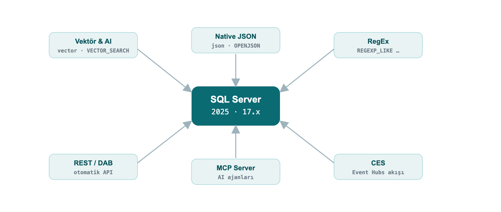
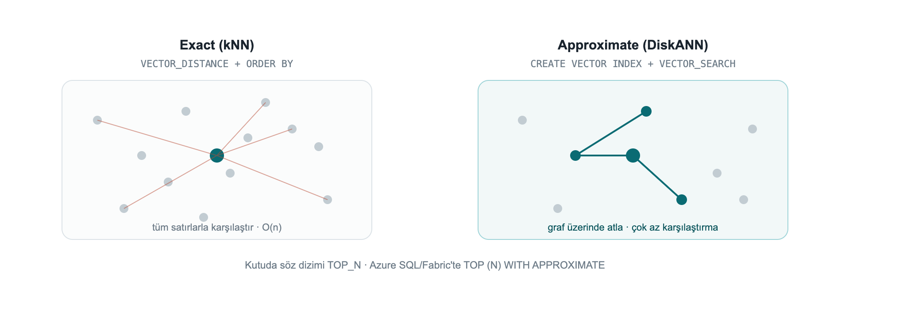
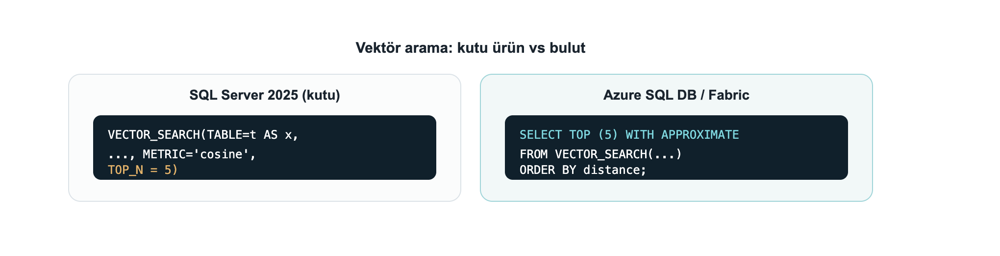
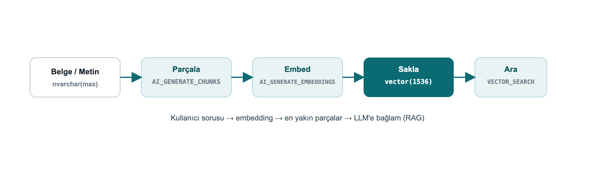
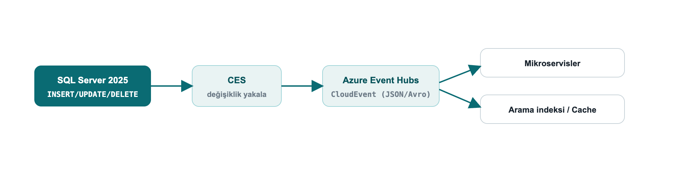
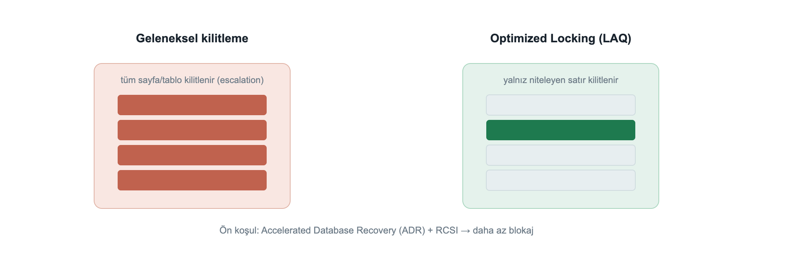
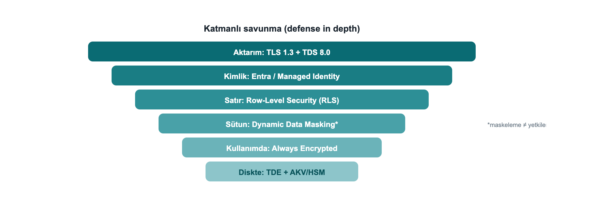

When SQL Server 2025 shipped, what I most wanted to know was what actually changes in a developer's day behind the marketing headlines. Having lived with SQL Server for years, I know that "a new version is out" usually means "a few new flags, a few gotchas, and a lot of fine detail."
I wrote this book to live through that fine detail once, myself, and write it down. I ran nearly every example on a live SQL Server 2025 instance and marked, one by one, the places where the docs and the build diverge, or where a feature behaves differently on the box product versus the cloud. My goal is that you don't fall into the same traps after me.
This is not a DBA handbook; it is written from the perspective of an engineer who builds applications. You can read it front to back or jump to the chapter you need; each one stands on its own. Every example is runnable in the repository and is automatically re-verified on a real SQL Server 2025 on every push.
Enjoy the read.
Çağlar Özenç
Set up the environment in 60 seconds, turn on the preview flags, and see how to read this book.
This ebook is written for software developers, software specialists and SQL developers. The goal is to explain SQL Server 2025 not from a DBA's angle but from the perspective of an engineer who builds applications: the new T-SQL capabilities, the features that turn the database into an AI application platform, and how to use them from .NET / EF Core / Python code.
Nearly every example in this book was executed on a real SQL Server 2025 instance and is shown with its output. The version used:
Microsoft SQL Server 2025 (RTM-CU7) - 17.0.4065.4 (X64)
Enterprise Developer Edition (64-bit) on Linux (Ubuntu 24.04)Why real output? The syntax of preview features can diverge between the docs and a given build. By validating every example on a live engine, this book eliminates the "the docs said so but it didn't work" trap. Wherever the box product diverges from Azure SQL / Fabric, the difference is called out explicitly.
SQL Server 2025 (version 17.x) is the broadest engine release since 2016. From a developer's point of view, the highlights are:
nvarchar(max) is over.
The command I used to set up my lab; the same one works for you:
docker run -e "ACCEPT_EULA=Y" -e "MSSQL_SA_PASSWORD=Strong#Passw0rd" \
-e "MSSQL_PID=Developer" -p 1433:1433 --name sqldev2025 -d \
mcr.microsoft.com/mssql/server:2025-latestTo connect, use sqlcmd (18+), SSMS 21, the VS Code mssql extension or Azure Data Studio. A quick test from inside the container:
docker exec -it sqldev2025 /opt/mssql-tools18/bin/sqlcmd \
-S localhost -U sa -P 'Strong#Passw0rd' -C -No -Q "SELECT @@VERSION"Note:
-C -No= trust the server certificate + do not force encryption. In production use a valid certificate; SQL Server 2025 supports TLS 1.3 + TDS 8.0 on the wire.
Some features (vector index, CES, fuzzy matching, etc.) require a database-scoped preview flag. In addition, some new functions need compatibility level 170 (such as AI_GENERATE_CHUNKS).
CREATE DATABASE DevBook;
ALTER DATABASE DevBook SET COMPATIBILITY_LEVEL = 170;
GO
-- Enable preview features (persisted on the database)
ALTER DATABASE SCOPED CONFIGURATION SET PREVIEW_FEATURES = ON;Check:
SELECT name, value FROM sys.database_scoped_configurations WHERE name = 'PREVIEW_FEATURES';name value
---------------- -----
PREVIEW_FEATURES 1Vector search, native JSON and RegEx inside the language. In this part the data itself changes: the database now stores embeddings, holds documents and matches patterns.
This is the headline of the release. SQL Server 2025 stores, indexes and searches embeddings; it can even generate embeddings from within T-SQL. You can build a RAG (retrieval-augmented generation) pipeline inside the database itself.
vector data type and vector functionsvector(n) stores a fixed-length numeric array; it is kept in an optimized binary format but exposed like a JSON array. Each element uses single (4-byte, float32) precision.
DECLARE @a vector(3) = '[1,2,3]', @b vector(3) = '[2,3,4]';
SELECT VECTOR_DISTANCE('cosine', @a, @b) AS cosine_dist,
VECTOR_DISTANCE('euclidean', @a, @b) AS euclid_dist,
VECTOR_NORM(@a, 'norm2') AS l2norm,
CAST(VECTOR_NORMALIZE(@a, 'norm2') AS varchar(64)) AS normalized;cosine_dist euclid_dist l2norm normalized
--------------------- ------------------- ------------------ -------------------------------------------------
7.4167251586914062E-3 1.7320507764816284 3.7416573867739413 [2.6726124e-001,5.3452247e-001,8.0178368e-001]VECTOR_DISTANCE supports three metrics: 'cosine', 'euclidean', 'dot'. You read a vector's properties with VECTORPROPERTY:
DECLARE @a vector(3) = '[1,2,3]';
SELECT VECTORPROPERTY(@a,'Dimensions') AS dims, VECTORPROPERTY(@a,'BaseType') AS basetype;dims basetype
---- --------
3 float32Finding nearest neighbors needs no index: VECTOR_DISTANCE + ORDER BY performs an exact (kNN) search. It works on small-medium sets and on every edition (box + Azure + Fabric).
DECLARE @qv vector(5) = '[0.3,0.3,0.3,0.3,0.3]';
SELECT TOP (3) id, title, VECTOR_DISTANCE('cosine', embedding, @qv) AS dist
FROM dbo.Articles
ORDER BY dist;id title dist
-- ---------- -------------------
15 Article 15 0.09546583890914917
30 Article 30 0.09546583890914917
49 Article 49 0.09546583890914917Field example: similar support tickets. When a new support ticket arrives, finding similar tickets resolved in the past shortens resolution time. You keep each ticket's embedding in a vector column, embed the incoming ticket with the same model, and pull the nearest neighbors:
CREATE TABLE dbo.Tickets (id int PRIMARY KEY, subject nvarchar(60), v vector(3));
INSERT dbo.Tickets VALUES
(1,'Query runs very slowly','[0.90,0.10,0.05]'),
(2,'App cannot connect to the database','[0.10,0.90,0.10]'),
(3,'Report screen opens late','[0.82,0.18,0.08]'),
(4,'Nightly backup failed','[0.08,0.12,0.90]');
-- New ticket is performance-themed; the 2 most similar past tickets
DECLARE @new vector(3) = '[0.88,0.12,0.06]';
SELECT TOP 2 id, subject, ROUND(VECTOR_DISTANCE('cosine', v, @new), 4) AS distance
FROM dbo.Tickets ORDER BY distance;id subject distance
-- ------------------------ --------
1 Query runs very slowly 0.0004
3 Report screen opens late 0.0036The performance-themed ticket returned the two performance tickets, not the connection or backup ones. In reality you use vector(384)/vector(1536) from an embedding model instead of vector(3) (see Chapter 11.4).
On millions of rows an exact scan is expensive. A DiskANN-based vector index makes it scalable with approximate nearest neighbor (ANN) search.

While trying it I hit four practical traps, in order:
Trap 1, the preview flag. The vector index + VECTOR_SEARCH is in preview on the box product: PREVIEW_FEATURES = ON is required (not needed on Azure SQL DB / Fabric SQL).
Trap 2, `SET QUOTED_IDENTIFIER ON`. If this option is off, index creation fails with Msg 1934 (it is off by default in sqlcmd; on in SSMS):
Msg 1934, Level 16: CREATE VECTOR INDEX failed because the following SET
options have incorrect settings: 'QUOTED_IDENTIFIER'.The correct setup:
SET QUOTED_IDENTIFIER ON;
-- At least 100 rows are required; the embeddings are generated for the example
CREATE TABLE dbo.Articles (id int PRIMARY KEY, title nvarchar(100), embedding vector(5));
INSERT dbo.Articles (id, title, embedding)
SELECT value, 'Article ' || value,
CAST(JSON_ARRAY(value*0.01, value*0.02, value*0.03, value*0.04, value*0.05) AS vector(5))
FROM GENERATE_SERIES(1, 100);
CREATE VECTOR INDEX vec_idx ON dbo.Articles(embedding)
WITH (METRIC = 'cosine', TYPE = 'diskann');
SELECT name, type_desc FROM sys.vector_indexes;name type_desc
------- ---------
vec_idx VECTORTrap 3, the syntax is `TOP_N` on the box, `WITH APPROXIMATE` on Azure/Fabric. This was the most important thing I found. The newer SELECT TOP (N) WITH APPROXIMATE syntax is for "latest version indexes" and currently exists only on Azure SQL Database and Fabric SQL. On the SQL Server 2025 box product (CU7), trying it gives:
Msg 102, Level 15: Incorrect syntax near 'APPROXIMATE'.On the box product you call the `VECTOR_SEARCH` function with the `TOP_N` parameter.
Trap 4, the alias rule. You reference table columns with the table alias (t) and the produced distance column with the result alias (s); mixing them yields "Invalid column name".
SET QUOTED_IDENTIFIER ON;
DECLARE @qv vector(5) = '[0.3,0.3,0.3,0.3,0.3]';
SELECT t.id, t.title, s.distance
FROM VECTOR_SEARCH(
TABLE = dbo.Articles AS t, -- table alias: t
COLUMN = embedding,
SIMILAR_TO = @qv,
METRIC = 'cosine',
TOP_N = 3) AS s -- result alias: s
ORDER BY s.distance;id title distance
-- --------- ---------------------
1 Article 1 9.5465958118438721E-2
2 Article 2 9.5465958118438721E-2
3 Article 3 9.5465958118438721E-2On Azure SQL DB / Fabric SQL the same query with a "latest version" index is written with
TOP (N) WITH APPROXIMATEinstead ofTOP_N, andORDER BYmust bedistanceASC only:SELECT TOP (3) WITH APPROXIMATE t.id, s.distance FROM VECTOR_SEARCH(TABLE = ... AS t, COLUMN = ..., SIMILAR_TO = @qv, METRIC = 'cosine') AS s ORDER BY s.distance;. Latest-version indexes also bring full DML (INSERT/UPDATE/DELETE) and iterative filtering (WHERE applied during the search); earlier indexes made the table read-only and applied filters after the search.

CREATE EXTERNAL MODEL defines an AI inference endpoint (Azure OpenAI, OpenAI, Ollama, ONNX Runtime) as a database object; AI_GENERATE_EMBEDDINGS generates embeddings with that model. With Managed Identity you authenticate without storing any key.
-- Prerequisite: enable outbound REST calls (on by default on Azure SQL DB / Fabric)
EXEC sp_configure 'external rest endpoint enabled', 1; RECONFIGURE WITH OVERRIDE;
-- Managed-Identity-based credential (the secret field is required)
CREATE DATABASE SCOPED CREDENTIAL [https://my-aoai.cognitiveservices.azure.com/]
WITH IDENTITY = 'Managed Identity',
secret = '{"resourceid":"https://cognitiveservices.azure.com"}';
CREATE EXTERNAL MODEL AzureEmbed WITH (
LOCATION = 'https://my-aoai.cognitiveservices.azure.com/openai/deployments/text-embedding-3-small/embeddings?api-version=2024-02-01',
API_FORMAT = 'Azure OpenAI',
MODEL_TYPE = EMBEDDINGS,
MODEL = 'text-embedding-3-small',
CREDENTIAL = [https://my-aoai.cognitiveservices.azure.com/]);Note: The credential name must exactly match the
LOCATIONprotocol + host. The only validMODEL_TYPEtoday isEMBEDDINGS. AcceptedAPI_FORMATvalues:Azure OpenAI,OpenAI,Ollama,ONNX Runtime(with ONNX you can run locally, offline).
HTTPS is required (verified live): The engine only allows HTTPS/TLS endpoints. When I pointed it at an HTTP Ollama endpoint, it was rejected outright:
>
Msg 31610 … Accessing the external endpoint is only allowed via HTTPS.
>
If you use a local model (Ollama/ONNX), put the endpoint behind TLS with a valid/trusted certificate; in practice most teams point
LOCATIONdirectly at Azure OpenAI.
I ran AI_GENERATE_EMBEDDINGS in two end-to-end scenarios myself. In both, the engine generated the embedding itself and wrote it into a vector column, then embedded the question with the same model and searched with VECTOR_DISTANCE.
A) Azure OpenAI (the production path). text-embedding-3-small (1536 dims), authenticated with HTTPEndpointHeaders (api-key):
CREATE TABLE dbo.Kb (id int IDENTITY PRIMARY KEY, chunk nvarchar(200), emb vector(1536));
INSERT dbo.Kb (chunk, emb)
SELECT c.chunk, AI_GENERATE_EMBEDDINGS(c.chunk USE MODEL AzureEmbed)
FROM (VALUES (N'SQL Server 2025 offers a built-in vector type and DiskANN index for semantic search.'),
(N'The native JSON type stores documents in a binary format.'),
(N'Regular expressions provide pattern matching without CLR.')) c(chunk);
DECLARE @q vector(1536) = AI_GENERATE_EMBEDDINGS(N'how do I search text by meaning?' USE MODEL AzureEmbed);
SELECT TOP 2 id, LEFT(chunk,52) AS chunk, ROUND(VECTOR_DISTANCE('cosine', emb, @q), 4) AS dist
FROM dbo.Kb ORDER BY dist;id chunk dist
-- ---------------------------------------------------- ------
1 SQL Server 2025 offers a built-in vector type and Di 0.7059
3 Regular expressions provide pattern matching without 0.8240B) A local model (Ollama), from inside the engine. If you want to keep the model on your machine, one detail matters: SQL Server only allows a trusted HTTPS endpoint and does not accept a self-signed certificate. I tested this in detail: even when the container's OS trusts the cert (OpenSSL verification OK), the engine's REST client does not, and it returns 0x80070008 without ever sending the request. The fix: run Ollama on your machine and put a trusted-certificate tunnel (for example the free cloudflared) in front of it. The model stays entirely local; SQL only sees the tunnel's trusted certificate:
-- In a terminal: ollama serve + cloudflared tunnel --url http://localhost:11434
CREATE EXTERNAL MODEL LocalOllama WITH (
LOCATION = 'https://<tunnel-name>.trycloudflare.com/api/embed',
API_FORMAT = 'Ollama', MODEL_TYPE = EMBEDDINGS, MODEL = 'all-minilm');
DECLARE @q vector(384) = AI_GENERATE_EMBEDDINGS(N'how do I find similar text by meaning?' USE MODEL LocalOllama);
SELECT TOP 2 id, LEFT(chunk,46) AS chunk, ROUND(VECTOR_DISTANCE('cosine', emb, @q), 4) AS dist
FROM dbo.KbLocal ORDER BY dist;id chunk dist
-- ----------------------------------------------- ------
1 SQL Server 2025 has a built-in vector type and 0.6912
3 Regular expressions match patterns without CLR 0.7352In both scenarios the engine generated the embedding itself and the semantic search ran on the local SQL Server 2025. The only extra component the local path needs is a trusted-certificate tunnel, because SQL does not accept a self-signed one. (The demo in Chapter 11.4, by contrast, generates embeddings on the client side and loads them, so it needs no tunnel at all.)
AI_GENERATE_CHUNKSFor RAG you must split long text into model-sized chunks. AI_GENERATE_CHUNKS does this and is a table-valued function, used with CROSS APPLY, returning chunk, chunk_order, chunk_offset, chunk_length columns. It requires no external endpoint, so the output below is real:
SELECT c.chunk, c.chunk_order, c.chunk_length
FROM (VALUES (N'SQL Server 2025 brings built-in vector and JSON for developers.')) d(t)
CROSS APPLY AI_GENERATE_CHUNKS(SOURCE = d.t, CHUNK_TYPE = FIXED, CHUNK_SIZE = 25, OVERLAP = 0) AS c;chunk chunk_order chunk_length
-------------------------- ----------- ------------
SQL Server 2025 brings bu 1 25
ilt-in vector and JSON fo 2 25
r developers. 3 13With OVERLAP (a percentage 0-50) you overlap consecutive chunks to improve retrieval accuracy. The full RAG flow: AI_GENERATE_CHUNKS → AI_GENERATE_EMBEDDINGS → INSERT into a vector(1536) column → VECTOR_DISTANCE/VECTOR_SEARCH against the query vector.

Native vectors travel over TDS with `Microsoft.Data.SqlClient` 6.1.0+; the SqlVector<float> type was added. .NET 10 adds the SqlDbType.Vector enumeration. For older clients, SQL Server exposes vectors as varchar(max) to preserve backward compatibility.
EF Core 10 fully supports vectors and VECTOR_DISTANCE (only on SQL Server 2025+):
public class Article
{
public int Id { get; set; }
public string Title { get; set; } = "";
[Column(TypeName = "vector(1536)")]
public SqlVector<float> Embedding { get; set; }
}You run semantic search over LINQ with EF.Functions.VectorDistance(...); the full connection string, query and Python examples are in Chapter 8.
Note: Starting with EF Core 11, vector properties are not loaded by default in a query because they are large, you select them explicitly when needed. With Dapper too,
SqlVector<float>binds directly as a parameter.
Decisions need real numbers. I ran the same query 5 times each, exact (no index) and DiskANN ANN (VECTOR_SEARCH), over a 100,000-row, 16-dimension table (warm cache):
At this scale ANN is ~3× faster; the real payoff grows with row count and dimensionality (with millions of rows at 768/1536 dims the gap becomes far larger). Rule of thumb: up to a few hundred thousand rows and modest latency needs, exact is enough and simpler; beyond that, move to a DiskANN index. ANN is approximate, if you need 100% precision, use exact.
Box-product note: This ANN measurement used the box-product
VECTOR_SEARCH ... TOP_Nsyntax; it needsPREVIEW_FEATURES = ONandSET QUOTED_IDENTIFIER ON(see Chapter 10, Troubleshooting).
There is now a real json data type: stored in binary, indexable, up to 2 GB per document. Read performance improves markedly over storing JSON inside nvarchar(max), and the schema is validated by the engine.
json columnCREATE TABLE dbo.Orders (Id int IDENTITY PRIMARY KEY, Doc json);
INSERT dbo.Orders (Doc) VALUES
(N'{"customer":"Ada","total":1290.50,"items":["ssd","ram"],"paid":true}'),
(N'{"customer":"Linus","total":540.00,"items":["kbd"],"paid":false}');
SELECT Id,
JSON_VALUE(Doc, '$.customer') AS customer,
CAST(JSON_VALUE(Doc, '$.total') AS decimal(10,2)) AS total,
JSON_QUERY(Doc, '$.items') AS items,
ISJSON(Doc) AS is_valid
FROM dbo.Orders;Id customer total items is_valid
-- -------- ------- -------------- --------
1 Ada 1290.50 ["ssd","ram"] 1
2 Linus 540.00 ["kbd"] 1JSON_VALUE returns a scalar value, JSON_QUERY an object/array. ISJSON tests whether a text is valid JSON.
JSON_MODIFYUPDATE dbo.Orders SET Doc = JSON_MODIFY(Doc, '$.paid', 'true') WHERE Id = 2;
SELECT Id, JSON_VALUE(Doc, '$.paid') AS paid FROM dbo.Orders WHERE Id = 2;Id paid
-- ----
2 trueNuance: If the value argument of
JSON_MODIFYis a T-SQL string, it is written to JSON as a string:JSON_MODIFY(Doc,'$.paid','true')→{"paid":"true"}. For a real JSON boolean, pass the value with the right type:JSON_MODIFY(Doc,'$.paid', CAST(1 AS bit))→{"paid":true}(verified live).
JSON_ARRAYAGG / JSON_OBJECTAGGThe two new first-class aggregates of 2025 put an end to string-concatenation tricks:
SELECT JSON_ARRAYAGG(JSON_VALUE(Doc,'$.customer')) AS customers,
JSON_OBJECTAGG(JSON_VALUE(Doc,'$.customer')
: CAST(JSON_VALUE(Doc,'$.total') AS decimal(10,2))) AS totals
FROM dbo.Orders;customers totals
----------------- ------------------------------
["Ada","Linus"] {"Ada":1290.50,"Linus":540.00}OPENJSONSELECT o.Id, j.[value] AS item
FROM dbo.Orders o CROSS APPLY OPENJSON(o.Doc, '$.items') j;Id item
-- ----
1 ssd
1 ram
2 kbdField example: orders that contain a specific product. To search for a value inside a json array, use OPENJSON in a subquery; no separate search service needed:
SELECT Id, JSON_VALUE(Doc, '$.customer') AS customer
FROM dbo.Orders
WHERE 'ssd' IN (SELECT value FROM OPENJSON(Doc, '$.items'));Id customer
-- --------
1 AdaRegex inside the language, without CLR, has finally arrived. You can push most of the validation/cleaning logic from the application layer down into the engine.
SELECT REGEXP_REPLACE(' too much space ', '\s+', ' ') AS normalized,
REGEXP_SUBSTR('SKU: ABC-12345 stock', '[A-Z]{3}-\d{5}') AS sku,
REGEXP_COUNT('a1b2c3d4', '\d') AS digit_count,
REGEXP_INSTR('order-2026', '\d{4}') AS year_pos;normalized sku digit_count year_pos
--------------- --------- ----------- --------
too much space ABC-12345 4 7The full set: REGEXP_LIKE, REGEXP_REPLACE, REGEXP_SUBSTR, REGEXP_INSTR, REGEXP_COUNT, REGEXP_MATCHES, REGEXP_SPLIT_TO_TABLE.
REGEXP_LIKE is a PREDICATEThe most important developer detail I found: REGEXP_LIKE is a search predicate, used inside WHERE, CASE, CHECK. You cannot select it directly like SELECT ... AS ok, nor compare it with = 0. This is wrong:
Msg 102, Level 15: Incorrect syntax near '='. -- WHERE REGEXP_LIKE(...) = 0 IS WRONGCorrect usage, find invalid emails with NOT:
SELECT email
FROM (VALUES ('valid@x.com'), ('invalid@@')) c(email)
WHERE NOT REGEXP_LIKE(email, '^[\w.+-]+@[\w-]+\.[\w.-]+$');email
----------
invalid@@If you want a scalar result, wrap it in CASE:
SELECT email,
CASE WHEN REGEXP_LIKE(email,'^[\w.+-]+@[\w-]+\.[\w.-]+$') THEN 'valid' ELSE 'INVALID' END AS status
FROM (VALUES ('ada@dmc.com.tr'),('bad@@x'),('linus@kernel.org')) c(email);email status
---------------- ------
ada@dmc.com.tr valid
bad@@x INVALID
linus@kernel.org validField example: validating a Turkish phone number and IBAN. You validate form data at the engine level, without trusting the application:
SELECT val,
CASE WHEN REGEXP_LIKE(val, '^\+90 ?\d{3} ?\d{3} ?\d{2} ?\d{2}$') THEN 'phone OK'
WHEN REGEXP_LIKE(val, '^TR\d{24}$') THEN 'IBAN OK'
ELSE 'invalid' END AS result
FROM (VALUES ('+90 212 945 61 66'), ('TR330006100519786457841326'), ('broken-data')) v(val);val result
--------------------------- --------
+90 212 945 61 66 phone OK
TR330006100519786457841326 IBAN OK
broken-data invalidSELECT value FROM REGEXP_SPLIT_TO_TABLE('sql,server;2025|dev', '[,;|]');value
------
sql
server
2025
devFor typo tolerance and record matching. These are preview features:
SELECT EDIT_DISTANCE('Istanbul','Istambul') AS edit_dist,
EDIT_DISTANCE_SIMILARITY('Istanbul','Istambul') AS edit_sim,
JARO_WINKLER_SIMILARITY('Ankara','Ankraa') AS jw_sim;edit_dist edit_sim jw_sim
--------- -------- ------
1 88 96EDIT_DISTANCE = number of edits (insert/delete/substitute) required; the *_SIMILARITY functions return a 0-100 similarity.
SELECT 'sql' || '-' || '2025' AS pipe_concat, -- || concatenation
GREATEST(3,9,4,7) AS greatest_v,
LEAST(3,9,4,7) AS least_v,
CURRENT_DATE AS today,
BASE64_ENCODE(CAST('DMC' AS varbinary(8))) AS b64,
CAST(BASE64_DECODE('RE1D') AS varchar(8)) AS b64_back;pipe_concat greatest_v least_v today b64 b64_back
----------- ---------- ------- ---------- ---- --------
sql-2025 9 3 2026-07-26 RE1D DMCPRODUCT(), a new aggregate computing the product of a set (compound growth, probabilities, etc.):
SELECT category, PRODUCT(factor) AS compound
FROM (VALUES ('growth',1.10), ('growth',1.05), ('growth',1.20)) t(category,factor)
GROUP BY category;category compound
-------- --------
growth 1.386000Also: UNISTR (Unicode escapes), CURRENT_DATE, SUBSTRING with an optional length (ANSI alignment), DATEADD now accepts bigint, and GENERATE_SERIES for number sequences:
SELECT STRING_AGG(CAST(value AS varchar(4)), ',') AS series FROM GENERATE_SERIES(1, 10, 2);series
---------
1,3,5,7,9Connect the database to services and event streams, scale concurrency, and protect data layer by layer. This is where the real difference shows up in production.
SQL Server 2025 makes the database a first-class part of event-driven and service-oriented architectures.
sp_invoke_external_rest_endpointCall a REST/GraphQL endpoint directly from the database: trigger an Azure Function, update a Power BI dashboard, talk to Azure OpenAI, call an on-prem service.
DECLARE @response nvarchar(max);
EXEC sp_invoke_external_rest_endpoint
@url = 'https://api.example.com/v1/notify',
@method = 'POST',
@payload = N'{"orderId": 42, "status": "shipped"}',
@headers = '{"Content-Type":"application/json"}',
@response = @response OUTPUT;
SELECT JSON_VALUE(@response, '$.result') AS result;Security: The endpoint must be HTTPS + TLS; credentials live in a
DATABASE SCOPED CREDENTIAL. This feature is enabled viasp_configure 'external rest endpoint enabled'.
Data API Builder produces secure REST and GraphQL endpoints from your tables and views without writing code. A single JSON configuration is enough:
{
"data-source": { "database-type": "mssql", "connection-string": "@env('SQL_CONN')" },
"entities": {
"Article": {
"source": "dbo.Articles",
"permissions": [
{ "role": "anonymous", "actions": ["read"] },
{ "role": "authenticated", "actions": ["create", "update"] }
]
}
}
}Run: dab start. Now GET /api/Article (REST) and /graphql (GraphQL) are ready, with paging, filtering and row-level security. Ideal for frontend teams. I ran DAB against DevBook in the container; the real GET /api/Article?$first=2 response (including the vector column):
{ "value": [
{ "id": 1, "title": "Article 1", "embedding": [0.01, 0.02, 0.03, 0.04, 0.05] },
{ "id": 2, "title": "Article 2", "embedding": [0.02, 0.04, 0.06, 0.08, 0.10] } ] }The SQL MCP Server (via Data API Builder) lets custom or Foundry AI agents connect to the database in a secure, governed way. Tools like GitHub Copilot and Cursor can reason over the schema and data through MCP. Azure SQL Hyperscale also exposes a direct SQL MCP endpoint.
CES publishes DML changes (insert/update/delete), with schema plus old/new values, near real time to Azure Event Hubs. Format: CloudEvent (JSON or Avro Binary). It is the event-driven successor to CDC, for keeping microservices, cache invalidation and search indexing in sync with data.

Field example: keep search and cache in sync with data. When an order is updated, CES publishes the change to Event Hubs as a CloudEvent; a consumer microservice picks up the event and refreshes the search index and cache. That solves the "the database was written but the search results/cache are stale" problem without a polling job or extra code on the application side.
CES is a preview feature (
PREVIEW_FEATURES). Upgrade note: the old Synapse Link was removed; the new path for analytical replication is Fabric Mirroring (see Chapter 8).
The engine improvements that most affect a developer's daily life.
Optimized Locking radically reduces lock memory and blocking. Two mechanisms: Lock After Qualification (LAQ) (a row is locked only after it qualifies) and Transaction-ID (TID) locking. The result: lock escalation is largely eliminated, with far less blocking under high-concurrency OLTP.

The prerequisite is Accelerated Database Recovery (ADR); it works best with RCSI:
ALTER DATABASE DevBook SET ACCELERATED_DATABASE_RECOVERY = ON;
ALTER DATABASE DevBook SET READ_COMMITTED_SNAPSHOT ON WITH ROLLBACK IMMEDIATE;
SELECT is_accelerated_database_recovery_on AS adr,
is_read_committed_snapshot_on AS rcsi
FROM sys.databases WHERE name = 'DevBook';adr rcsi
--- ----
1 1Field example: an order counter during a flash sale. When a discount starts, thousands of concurrent orders update a shared stock/counter row. Classic locking escalates to page/table locks and blocking explodes. With ADR + optimized locking, only the qualifying row is locked, so throughput rises noticeably; moving the hottest counters to In-Memory OLTP (Chapter 6.5) speeds it up further.
A new cure for the classic "catch-all" query problem (optional/NULL parameters stuck on a single plan). OPPO extends the Parameter Sensitive Plan Optimization (PSPO) infrastructure to produce different plans for optional parameter values, reducing the performance collapse of the WHERE (@x IS NULL OR col = @x) pattern.
Features that speed up existing workloads with minimal effort. The 2025 additions:
| Feature | What it does |
|---|---|
| CE feedback for expressions | Cardinality estimation learns from history at the expression level |
| OPPO | Multiple plans by optional parameter |
| DOP feedback (on by default) | Tunes degree of parallelism from history |
| Query Store for secondaries (on by default) | Query Store also on readable secondaries |
| ABORT_QUERY_EXECUTION hint | Blocks future execution of a known problematic query |
Query Store keeps plan history and runtime statistics; you can find a regressed query and force the good plan.
SELECT TOP 10 q.query_id, rs.avg_duration, rs.count_executions, p.plan_id
FROM sys.query_store_runtime_stats rs
JOIN sys.query_store_plan p ON p.plan_id = rs.plan_id
JOIN sys.query_store_query q ON q.query_id = p.query_id
ORDER BY rs.avg_duration DESC;
-- force the good plan
EXEC sys.sp_query_store_force_plan @query_id = 42, @plan_id = 7;For "hot" tables that need very high write throughput (counters, sessions, queues), memory-optimized tables run lock- and latch-free. First you need a MEMORY_OPTIMIZED_DATA filegroup:
ALTER DATABASE DevBook ADD FILEGROUP imoltp CONTAINS MEMORY_OPTIMIZED_DATA;
ALTER DATABASE DevBook ADD FILE (name='imoltp1', filename='/var/opt/mssql/data/imoltp1') TO FILEGROUP imoltp;
CREATE TABLE dbo.HotCounter (Id int PRIMARY KEY NONCLUSTERED, Hits bigint)
WITH (MEMORY_OPTIMIZED = ON, DURABILITY = SCHEMA_AND_DATA);
INSERT dbo.HotCounter VALUES (1, 0);
UPDATE dbo.HotCounter SET Hits = Hits + 1 WHERE Id = 1;
SELECT name, is_memory_optimized, durability_desc FROM sys.tables WHERE name='HotCounter';name is_memory_optimized durability_desc
---------- ------------------- ---------------
HotCounter 1 SCHEMA_AND_DATADURABILITY = SCHEMA_AND_DATA keeps the data durable; SCHEMA_ONLY keeps only the schema (data is lost on restart, ideal, and fastest, for transient/session data).
Security is not only the DBA's job but also the coder's. What a developer needs to know in SQL Server 2025.
Even the new RegEx/JSON functions do not excuse building queries by string concatenation. Always use parameterized commands (SqlParameter, EF Core, Dapper parameterize automatically). If dynamic SQL is unavoidable, use sp_executesql + parameters.
| Layer | Tool | When |
|---|---|---|
| Encryption in use | Always Encrypted (+ secure enclaves) | Even the DBA must not see it; equality-plus queries with enclaves |
| Row isolation | Row-Level Security (RLS) | Tenant separation in multi-tenant apps |
| Masking | Dynamic Data Masking (DDM) | Hide PII in the UI |
| Tamper evidence | Ledger | Cryptographic verifiability / compliance |
| Bulk encryption | TDE + AKV/Managed HSM | Encrypted data at rest |

CREATE TABLE dbo.Customers (
Id int,
TenantId int,
Ssn char(11) MASKED WITH (FUNCTION = 'partial(0,"*********",2)')
);
INSERT dbo.Customers VALUES (1,10,'12345678901'), (2,20,'98765432109');
SELECT Id, TenantId, Ssn FROM dbo.Customers; -- privileged (UNMASK) user viewId TenantId Ssn
-- -------- -----------
1 10 12345678901
2 20 98765432109Masking ≠ authorization. Above,
sa(which holds UNMASK) sees the real SSN; masking only hides the presentation and is exposed to inference viaWHERE/ORDER BY. For a real privacy boundary you need RLS + Always Encrypted. Treat DDM as a "shoulder-surfing reducer", not "security".
Encrypt=Strict in the connection string.##MS_DatabaseConnector##, etc.).When you must cryptographically prove that audit/compliance records haven't been tampered with, Ledger is exactly the tool. An append-only ledger table accepts only INSERT; UPDATE/DELETE are rejected by the engine:
CREATE TABLE dbo.AuditLog (Id int IDENTITY PRIMARY KEY, Actor sysname, Action nvarchar(50))
WITH (LEDGER = ON (APPEND_ONLY = ON));
INSERT dbo.AuditLog (Actor, Action) VALUES ('ada','GRANT'), ('linus','REVOKE');
UPDATE dbo.AuditLog SET Action = 'x' WHERE Id = 1; -- rejectedMsg 37359, Level 16: Updates are not allowed for the append only Ledger table 'dbo.AuditLog'.Updatable ledger tables also exist, they keep history via system-versioning and an automatic ledger view; each row's cryptographic hash can be verified through sys.database_ledger_transactions. Append-only is the simplest option for insert-only audit streams that need protection against deletion/tampering.
Keeping the ledger in the database rather than the application also prevents the audit trail from being corrupted by an application bug or malicious access.
Field example: a compliance audit trail (GDPR/KVKK). You must prove that the "who accessed which data, when" record has not been altered afterwards. An append-only ledger table holds this trail; an auditor can verify the records' cryptographic integrity through sys.database_ledger_transactions. The record is secured in the engine, not in the application layer.
With Always Encrypted, data is encrypted on the client; the server, including the DBA, only ever sees ciphertext, and the key never lives on the server. I set this up fully locally (with no Azure or Windows certificate store): a self-signed RSA certificate as the Column Master Key, and a custom key store provider (SqlColumnEncryptionKeyStoreProvider) in Microsoft.Data.SqlClient. The full, compiling code: samples/AlwaysEncryptedDemo.
CREATE COLUMN MASTER KEY CMK1 WITH (KEY_STORE_PROVIDER_NAME='DMC_LOCAL', KEY_PATH='local/dmc-cmk');
CREATE COLUMN ENCRYPTION KEY CEK1 WITH VALUES
(COLUMN_MASTER_KEY=CMK1, ALGORITHM='RSA_OAEP', ENCRYPTED_VALUE=0x...); -- produced by the client
CREATE TABLE dbo.Patients (
Id int IDENTITY PRIMARY KEY, Name nvarchar(60),
Ssn nvarchar(16) COLLATE Latin1_General_BIN2
ENCRYPTED WITH (COLUMN_ENCRYPTION_KEY=CEK1, ENCRYPTION_TYPE=DETERMINISTIC,
ALGORITHM='AEAD_AES_256_CBC_HMAC_SHA_256'));A client that adds Column Encryption Setting=Enabled to the connection string and registers the provider sees the plaintext (I ran this myself):
Id Name Ssn
-- ------------ -----------
1 Ada Lovelace 12345678901
2 Linus T. 98765432109The same rows, in a plain query with no key (typical DBA access), are only ciphertext:
Id Name Ssn
-- ------------ ------------------------------------------
1 Ada Lovelace 0x01BB7ED4FA4BEF8EC7F92F62643801121A131A...
2 Linus T. 0x013C9A5AF77F693B2C08E79892914AAC4E68021...The catalog confirms it too: the Ssn column is DETERMINISTIC-encrypted with CEK1/CMK1, provider DMC_LOCAL. Deterministic encryption allows equality search and joins (a BIN2 collation is required on text columns); for maximum privacy use RANDOMIZED. The difference from DDM (Chapter 7.3): masking only hides the presentation; with Always Encrypted the key lives on the client, so the server can never see the data under any circumstances.
Connect from code, upgrade safely, fix errors quickly, and finish with real-world recipes.
Native vectors require 6.1.0+. Connection string with strict encryption (TDS 8.0):
var cs = "Server=tcp:localhost,1433;Database=DevBook;User Id=app;Password=***;"
+ "Encrypt=Strict;TrustServerCertificate=False;";
await using var conn = new SqlConnection(cs);
await conn.OpenAsync();
// Vector parameter (Microsoft.Data.SqlClient 6.1+ / .NET 10 SqlDbType.Vector)
var cmd = new SqlCommand(
"SELECT TOP 5 id, title FROM dbo.Articles ORDER BY VECTOR_DISTANCE('cosine', embedding, @q)", conn);
cmd.Parameters.Add(new SqlParameter("@q", new SqlVector<float>(queryEmbedding)));
await using var r = await cmd.ExecuteReaderAsync();var q = new SqlVector<float>(queryEmbedding);
var results = await db.Articles
.Select(a => new {
a.Title,
Distance = EF.Functions.VectorDistance("cosine", a.Embedding, q) })
.OrderBy(x => x.Distance)
.Take(10)
.ToListAsync();import pyodbc, json
cn = pyodbc.connect(
"DRIVER={ODBC Driver 18 for SQL Server};SERVER=localhost;DATABASE=DevBook;"
"UID=app;PWD=***;Encrypt=yes;TrustServerCertificate=yes")
cur = cn.cursor()
qv = json.dumps([0.3, 0.3, 0.3, 0.3, 0.3]) # send the vector as a JSON array
cur.execute("""
SELECT TOP (3) id, title, VECTOR_DISTANCE('cosine', embedding, CAST(? AS vector(5))) AS dist
FROM dbo.Articles ORDER BY dist""", qv)
for row in cur.fetchall():
print(row.id, row.title, row.dist)Tip: On drivers that don't yet know native vectors (ODBC/JDBC), send the vector as JSON array text and convert with
CAST(... AS vector(n)), SQL Server also accepts vectors as text for backward compatibility.
AI_GENERATE_CHUNKS, etc.) require it.Microsoft.Data.SqlClient 6.1+, EF Core 10, .NET 10 (SqlDbType.Vector).VECTOR_SEARCH, CES, fuzzy matching are preview on the box product; tie production decisions to the GA timeline and remember PREVIEW_FEATURES is required.WITH APPROXIMATE is currently only on Azure SQL DB / Fabric SQL; on the box use VECTOR_SEARCH ... TOP_N.This table collects the errors I actually hit while testing and their fixes, the points that cost the most time when working with the vector/AI features.
| Error (message) | Cause | Fix |
|---|---|---|
Msg 1934 … CREATE VECTOR INDEX failed … 'QUOTED_IDENTIFIER' | QUOTED_IDENTIFIER is off in the session (sqlcmd default) | SET QUOTED_IDENTIFIER ON; before the index |
Msg 102 … Incorrect syntax near 'APPROXIMATE' | WITH APPROXIMATE doesn't exist on the box product | Use VECTOR_SEARCH … TOP_N on the box; WITH APPROXIMATE is Azure SQL DB/Fabric only |
Msg 102 … Incorrect syntax near '=' | REGEXP_LIKE(...) = 0, a predicate used as a scalar | WHERE NOT REGEXP_LIKE(...) or CASE WHEN REGEXP_LIKE(...) |
Msg 207 … Invalid column name 'id' (VECTOR_SEARCH) | Table column referenced via the result alias | Table columns via the table alias, distance via the result alias |
Msg 42227 … Cannot find a vector index with metric 'cosine' | No index, or its metric doesn't match | CREATE VECTOR INDEX … WITH (METRIC='cosine', …) with the same metric |
Incorrect syntax near 'REGEXP_LIKE' / function not found | Preview/compatibility context missing | PREVIEW_FEATURES = ON + COMPATIBILITY_LEVEL = 170 |
AI_GENERATE_CHUNKS not found | Compatibility level < 170 | ALTER DATABASE … SET COMPATIBILITY_LEVEL = 170; |
| Vector index/search behaves as if absent | PREVIEW_FEATURES is off | ALTER DATABASE SCOPED CONFIGURATION SET PREVIEW_FEATURES = ON; |
Golden rule: In a database that uses vector/AI, guarantee the trio at the start of the session,
PREVIEW_FEATURES = ON,COMPATIBILITY_LEVEL = 170,SET QUOTED_IDENTIFIER ON.
I ran and verified every recipe below myself.
Combine semantic proximity with a classic filter, WHERE filters first, then vector distance ranks:
DECLARE @qv vector(5) = '[0.3,0.3,0.3,0.3,0.3]';
SELECT TOP (3) id, title, VECTOR_DISTANCE('cosine', embedding, @qv) AS dist
FROM dbo.Articles
WHERE title LIKE '%1%' -- keyword / category filter
ORDER BY dist; -- semantic rankingStore changes as schemaless json, analyze with a query:
CREATE TABLE dbo.Audit (Id int IDENTITY, Event json);
INSERT dbo.Audit (Event) VALUES
(N'{"user":"ada","action":"login","ok":true}'),
(N'{"user":"ada","action":"delete","ok":false}');
SELECT JSON_VALUE(Event,'$.user') AS usr, COUNT(*) AS delete_count
FROM dbo.Audit
WHERE JSON_VALUE(Event,'$.action') = 'delete'
GROUP BY JSON_VALUE(Event,'$.user');usr delete_count
--- ------------
ada 1CHECK constraintReject invalid data at the engine level, without trusting the application:
CREATE TABLE dbo.Signup (
email nvarchar(200) CHECK (REGEXP_LIKE(email, '^[\w.+-]+@[\w-]+\.[\w.-]+$'))
);
INSERT dbo.Signup VALUES ('ok@dmc.com'); -- accepted
INSERT dbo.Signup VALUES ('bad@@'); -- CHECK violation → rejectedBecause
REGEXP_LIKEis a predicate, it can be used directly in aCHECKconstraint, even if the application layer is bypassed, an invalid email cannot enter the table.
I ran these examples on SQL Server 2025 myself: I turned real documents into vectors with a local embedding model (Ollama all-minilm, 384 dims), loaded them into a vector(384) column, and searched with live VECTOR_DISTANCE. (In production you generate embeddings with AI_GENERATE_EMBEDDINGS + Azure OpenAI, see Chapter 2.4; don't forget the engine's HTTPS requirement.)
1) Knowledge base, load with real embeddings. Each document is embedded with an external model; the result is stored as vector(384):
CREATE TABLE dbo.Kb (id int PRIMARY KEY, chunk nvarchar(300), embedding vector(384));
-- Each row is filled with a real 384-dim vector from an embedding model
INSERT dbo.Kb VALUES (1, N'SQL Server 2025 offers a built-in vector type and DiskANN index for semantic similarity search.', CAST('[...]' AS vector(384)));
-- ... 6 documents ...2) Embed the question, fetch the 3 nearest documents (live output):
DECLARE @q vector(384) = CAST('[...question embedding...]' AS vector(384));
SELECT TOP (3) id, chunk, ROUND(VECTOR_DISTANCE('cosine', embedding, @q), 4) AS dist
FROM dbo.Kb ORDER BY dist;Question: "how do I find semantically similar text in the database?"
id chunk dist
-- ------------------------------------------------------------------------------------------------ ------
1 SQL Server 2025 offers a built-in vector type and DiskANN index for semantic similarity search. 0.4082
3 The native JSON type stores documents in a binary format and speeds up indexed queries. 0.7696
4 Regular expression functions provide pattern matching and validation without CLR. 0.8228Semantic search works: although the question shares no keyword with it, the nearest document (0.41) is #1, which talks about semantic search; JSON (0.77) and RegEx (0.82) are clearly farther. The distance gap shows the ranking is genuinely meaning-based.
3) Serve it as an API, without writing a single line of code. Expose the same table over REST with Data API Builder (see Chapter 5.2); this too was verified myself:
{ "value": [
{ "id": 1, "title": "Article 1", "embedding": [0.01, 0.02, 0.03, 0.04, 0.05] },
{ "id": 2, "title": "Article 2", "embedding": [0.02, 0.04, 0.06, 0.08, 0.10] } ] }The result: chunk (live) → embed (real model) → store (`vector`) → search (`VECTOR_DISTANCE`, live) → serve (DAB REST, live), all database-centric, with no separate vector DB or search service.
| Topic | SQL Server 2022 | SQL Server 2025 |
|---|---|---|
| Vector search | None (external vector DB) | Built-in vector type + VECTOR_SEARCH + DiskANN |
| Embedding generation | In the application layer | In T-SQL: AI_GENERATE_EMBEDDINGS / EXTERNAL MODEL |
| JSON | nvarchar(max) + functions | Real json type (binary, indexable) |
| Pattern matching | LIKE / CLR | Built-in REGEXP_* functions |
| Concurrency | Classic locking | Optimized Locking (LAQ + TID) |
| API generation | Manual / external | Data API Builder (automatic REST/GraphQL) |
| Change streaming | CDC / CT | Change Event Streaming → Event Hubs |
| AI agent access | None | SQL MCP Server |
| .NET vectors | None | Microsoft.Data.SqlClient 6.1 SqlVector<float>, EF Core 10 |
| Compatibility level | 160 | 170 |
Quick reference: glossary, primary sources and the author.
VECTOR_DISTANCE.All feature and function names and their GA / preview status are verified against the primary Microsoft sources below; I executed the examples on SQL Server 2025 (RTM-CU7, 17.0.4065.4).
Çağlar Özenç, Founder and Microsoft Data Platform MVP.
I have spent years working with SQL Server and data platforms: performance tuning, disaster recovery, backup and high availability are my core focus. DMC Bilgi Teknolojileri, the company I founded, has delivered hundreds of data projects across the public and private sectors over more than 15 years of field experience, managing databases with proactive consulting and 24/7 support. I wrote this book by testing what I have learned in the field directly on SQL Server 2025.
Personal site: caglarozenc.com
Contact: dmcteknoloji.com · +90 212 945 61 66 · info@dmcteknoloji.com
I validated the examples on a live SQL Server 2025 instance myself; verify exact syntax against your installed build and the official docs, preview features may change before GA.